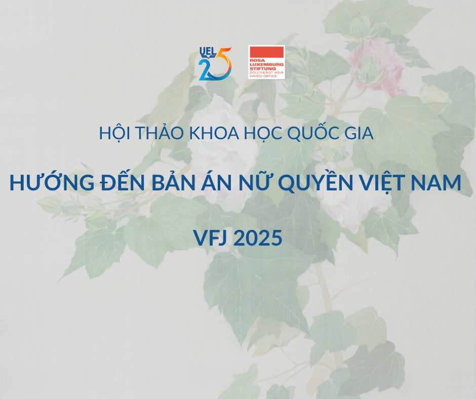

VFJ 2025

Nghiên cứu lý luận nữ quyền, lý luận pháp lý nữ quyền và nghiên cứu giới ngày càng trở thành xu hướng trong nghiên cứu pháp lý, góp phần vào cải cách pháp luật, thúc đẩy công bằng xã hội và bình đẳng giới. Một lợi thế quan trọng cho các nhà nghiên cứu Việt Nam hiện nay là sự phát triển của các phong trào xã hội liên quan đến bình đẳng giới, giúp phổ biến kiến thức lý luận nữ quyền nói chung và lý luận pháp lý nữ quyền nói riêng. Tuy nhiên, các diễn đàn học thuật cần tiếp tục đào sâu để thúc đẩy việc đưa tư tưởng nữ quyền vào nghiên cứu pháp lý và nghiên cứu giới, khai thác những định kiến giới ẩn sâu trong quá trình xây dựng và thực thi pháp luật.
Dự án Tích hợp lý luận pháp lý nữ quyền vào đào tạo, nghiên cứu và thực hành pháp lý do Trường Đại học Kinh tế – Luật (ĐHQG-HCM) điều phối, thực hiện và được tài trợ bởi Văn phòng Rosa-Luxemburg-Stiftung tại Hà Nội. Trong khuôn khổ dự án, Hội thảo Khoa học Quốc gia năm 2025 với chủ đề “Hướng đến Bản án nữ quyền Việt Nam” được tổ chức nhằm tuyển chọn các bài viết xuất sắc để xuất bản trong chuyên khảo học thuật về Bản án nữ quyền Việt Nam.
Ban Tổ chức trân trọng mời các nhà nghiên cứu, học giả, nhà thực hành và nhà hoạt động gửi tóm tắt theo đúng quy định gửi bài.
Để biết chi tiết, vui lòng tham khảo trang Quy định gửi tóm tắt.